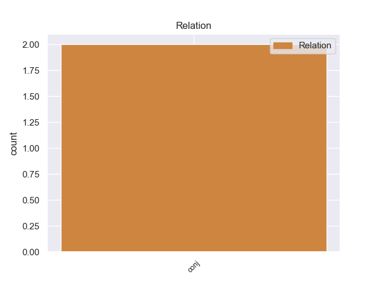
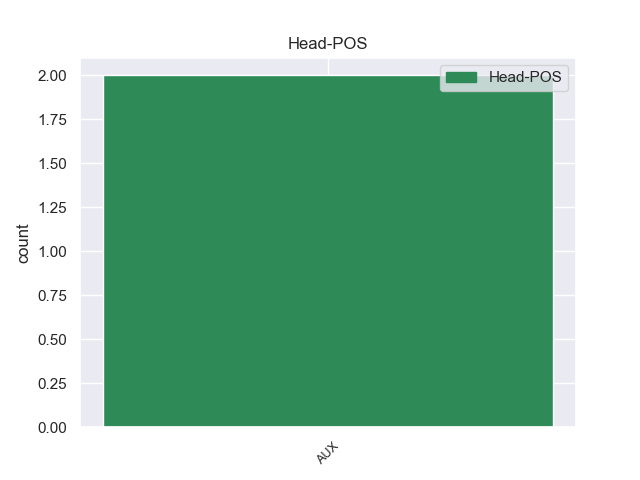
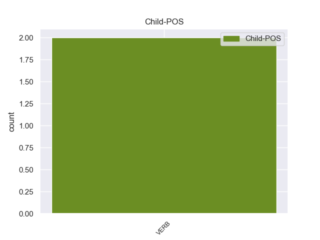

Distribution of features within this leaf



Agreement Rules sorted by frequency.
- When the dependent token is the conjunct(conj) of the head token, and the head token is AUX
1 वरन _ _ _ _ 0 _ _ _
2 , _ _ _ _ 0 _ _ _
3 परिहाणीय _ _ _ _ 0 _ _ _
4 कार्य _ _ _ _ 0 _ _ _
5 ( _ _ _ _ 0 _ _ _
6 फेरिप्हेरल्आङ्ङइर् _ _ _ _ 0 _ _ _
7 ) _ _ _ _ 0 _ _ _
8 है _ _ _ _ 0 _ _ _
9 . _ _ _ _ 0 _ _ _
10 तन्त्रिका _ _ _ _ 0 _ _ _
11 आवेग _ _ _ _ 0 _ _ _
12 ( _ _ _ _ 0 _ _ _
13 णेर्वे _ _ _ _ 0 _ _ _
14 ईम्पुल्से _ _ _ _ 0 _ _ _
15 ) _ _ _ _ 0 _ _ _
16 संवेदन _ _ _ _ 0 _ _ _
17 तन्त्रिकाओं _ _ _ _ 0 _ _ _
18 ( _ _ _ _ 0 _ _ _
19 शेन्सोर्य्णेर्वेस् _ _ _ _ 0 _ _ _
20 ) _ _ _ _ 0 _ _ _
21 के _ _ _ _ 0 _ _ _
22 माध्यम _ _ _ _ 0 _ _ _
23 से _ _ _ _ 0 _ _ _
24 मस्तिष्क _ _ _ _ 0 _ _ _
25 में _ _ _ _ 0 _ _ _
26 आते _ _ _ _ 0 _ _ _
27 हैं _ _ _ _ 0 _ _ _
28 तथा _ _ _ _ 0 _ _ _
29 गामक _ _ _ _ 0 _ _ _
30 तन्त्रिकाओं _ _ _ _ 0 _ _ _
31 ( _ _ _ _ 0 _ _ _
32 ंओटोर्णेर्वेस् _ _ _ _ 0 _ _ _
33 ) _ _ _ _ 0 _ _ _
34 में _ _ _ _ 0 _ _ _
35 परावर्तित _ _ _ _ 0 _ _ _
36 हो _ _ _ _ 0 _ _ _
37 जाते _ _ _ _ 0 _ _ _
38 हैं _ _ _ _ 0 _ _ _
39 . _ _ _ _ 0 _ _ _
40 इस _ _ _ _ 0 _ _ _
41 प्रकार _ _ _ _ 0 _ _ _
42 समस्त _ _ _ _ 0 _ _ _
43 मानव _ _ _ _ 0 _ _ _
44 - _ _ _ _ 0 _ _ _
45 व्यवहारशारीरिक _ _ _ _ 0 _ _ _
46 गति _ _ _ _ 0 _ _ _
47 सम्बन्धी _ _ _ _ 0 _ _ _
48 संवेदन _ _ _ _ 0 _ _ _
49 ( _ _ _ _ 0 _ _ _
50 शेन् _ _ _ _ 0 _ _ _
51 - _ _ _ _ 0 _ _ _
52 ~ _ _ _ _ 0 _ _ _
53 सोर्य् _ _ _ _ 0 _ _ _
54 ंओटोर् _ _ _ _ 0 _ _ _
55 ) _ _ _ _ 0 _ _ _
56 है _ _ _ _ 0 _ _ _
57 . _ _ _ _ 0 _ _ _
58 इस _ _ _ _ 0 _ _ _
59 प्रकारमानव _ _ _ _ 0 _ _ _
60 - _ _ _ _ 0 _ _ _
61 व्यवहार _ _ _ _ 0 _ _ _
62 मस्तिष्क _ _ _ _ 0 _ _ _
63 का _ _ _ _ 0 _ _ _
64 कार्य _ _ _ _ 0 _ _ _
65 नहीं _ _ _ _ 0 _ _ _
66 है _ _ _ _ 0 _ _ _
67 , _ _ _ _ 0 _ _ _
68 वरन् _ _ _ _ 0 _ _ _
69 यह _ _ _ _ 0 _ _ _
70 तो _ _ _ _ 0 _ _ _
71 समस्त _ _ _ _ 0 _ _ _
72 शरीर _ _ _ _ 0 _ _ _
73 प्रणालीका _ _ _ _ 0 _ _ _
74 कार्य _ _ _ _ 0 _ _ _
75 हैं _ _ _ _ 0 _ _ _
76 . _ _ _ _ 0 _ _ _
77 इस _ _ _ _ 0 _ _ _
78 प्रणाली _ _ _ _ 0 _ _ _
79 में _ _ _ _ 0 _ _ _
80 स्मृति _ _ _ _ 0 _ _ _
81 का _ _ _ _ 0 _ _ _
82 विशेष _ _ _ _ 0 _ _ _
83 स्थान _ _ _ _ 0 _ _ _
84 है _ _ _ _ 0 _ _ _
85 . _ _ _ _ 0 _ _ _
86 स्मृतिप्रतिमाओं _ _ _ _ 0 _ _ _
87 के _ _ _ _ 0 _ _ _
88 फलस्वरूप _ _ _ _ 0 _ _ _
89 पैदा _ _ _ _ 0 _ _ _
90 होती _ _ _ _ 0 _ _ _
91 है _ _ _ _ 0 _ _ _
92 . _ _ _ _ 0 _ _ _
93 प्रत्येक _ _ _ _ 0 _ _ _
94 व्यक्ति _ _ _ _ 0 _ _ _
95 में _ _ _ _ 0 _ _ _
96 स्मृति _ _ _ _ 0 _ _ _
97 - _ _ _ _ 0 _ _ _
98 प्रतिमाएँ _ _ _ _ 0 _ _ _
99 होती _ _ _ _ 0 _ _ _
100 हैं _ _ _ _ 0 _ _ _
101 तथा _ _ _ _ 0 _ _ _
102 प्रत्येक _ _ _ _ 0 _ _ _
103 व्यक्ति _ _ _ _ 0 _ _ _
104 अपनी _ _ _ _ 0 _ _ _
105 स्मृति _ _ _ _ 0 _ _ _
106 - _ _ _ _ 0 _ _ _
107 प्रतिमाओं _ _ _ _ 0 _ _ _
108 का _ _ _ _ 0 _ _ _
109 उल्लेखकर _ _ _ _ 0 _ _ _
110 सकता _ _ _ _ 0 _ _ _
111 है _ _ _ _ 0 _ _ _
112 . _ _ _ _ 0 _ _ _
113 किसी _ _ _ _ 0 _ _ _
114 वस्तु _ _ _ _ 0 _ _ _
115 का _ _ _ _ 0 _ _ _
116 वर्णन _ _ _ _ 0 _ _ _
117 करते _ _ _ _ 0 _ _ _
118 समय _ _ _ _ 0 _ _ _
119 वस्तु _ _ _ _ 0 _ _ _
120 की _ _ _ _ 0 _ _ _
121 प्रतिमा _ _ _ _ 0 _ _ _
122 मस्तिष्क _ _ _ _ 0 _ _ _
123 मेंआ _ _ _ _ 0 _ _ _
124 जाती _ _ _ _ 0 _ _ _
125 है _ _ _ _ 0 _ _ _
126 . _ _ _ _ 0 _ _ _
127 मस्तिष्क _ _ _ _ 0 _ _ _
128 इन _ _ _ _ 0 _ _ _
129 प्रतिमाओं _ _ _ _ 0 _ _ _
130 का _ _ _ _ 0 _ _ _
131 सम्बन्ध _ _ _ _ 0 _ _ _
132 तन्त्रिकाओं _ _ _ _ 0 _ _ _
133 से _ _ _ _ 0 _ _ _
134 स्थापित _ _ _ _ 0 _ _ _
135 करदेता _ _ _ _ 0 _ _ _
136 है _ _ _ _ 0 _ _ _
137 और _ _ _ _ 0 _ _ _
138 इसी _ _ _ _ 0 _ _ _
139 प्रकार _ _ _ _ 0 _ _ _
140 पेशियाँ _ _ _ _ 0 _ _ _
141 भी _ _ _ _ 0 _ _ _
142 इस _ _ _ _ 0 _ _ _
143 प्रतिमा _ _ _ _ 0 _ _ _
144 से _ _ _ _ 0 _ _ _
145 सम्बन्धित _ _ _ _ 0 _ _ _
146 हो _ _ _ _ 0 _ _ _
147 जाती _ _ _ _ 0 _ _ _
148 हैं _ _ _ _ 0 _ _ _
149 . _ _ _ _ 0 _ _ _
150 प्रतिमाएँ _ _ _ _ 0 _ _ _
151 वाटसन _ _ _ _ 0 _ _ _
152 के _ _ _ _ 0 _ _ _
153 अनुसार _ _ _ _ 0 _ _ _
154 संवेदनाओं _ _ _ _ 0 _ _ _
155 से _ _ _ _ 0 _ _ _
156 मिलती _ _ _ _ 0 _ _ _
157 - _ _ _ _ 0 _ _ _
158 जुलती _ _ _ _ 0 _ _ _
159 हैं _ _ _ _ 0 _ _ _
160 , _ _ _ _ 0 _ _ _
161 माना _ _ _ _ 0 _ _ _
162 कि _ _ _ _ 0 _ _ _
163 वेकिसी _ _ _ _ 0 _ _ _
164 उद्दीपक _ _ _ _ 0 _ _ _
165 का _ _ _ _ 0 _ _ _
166 फल _ _ _ _ 0 _ _ _
167 नही _ _ _ _ 0 _ _ _
168 हैं _ _ _ _ 0 _ _ _
169 . _ _ _ _ 0 _ _ _
170 ( _ _ _ _ 0 _ _ _
171 इव् _ _ _ _ 0 _ _ _
172 ) _ _ _ _ 0 _ _ _
173 अनुभूति _ _ _ _ 0 _ _ _
174 तथा _ _ _ _ 0 _ _ _
175 संवेग _ _ _ _ 0 _ _ _
176 ( _ _ _ _ 0 _ _ _
177 ञेएलिन्ग् _ _ _ _ 0 _ _ _
178 अन्ड् _ _ _ _ 0 _ _ _
179 ऐमोटिओन्स् _ _ _ _ 0 _ _ _
180 ) _ _ _ _ 0 _ _ _
181 वाटसन _ _ _ _ 0 _ _ _
182 ने _ _ _ _ 0 _ _ _
183 अनुभूति _ _ _ _ 0 _ _ _
184 के _ _ _ _ 0 _ _ _
185 सम्बन्ध _ _ _ _ 0 _ _ _
186 में _ _ _ _ 0 _ _ _
187 अपना _ _ _ _ 0 _ _ _
188 वैज्ञानिक _ _ _ _ 0 _ _ _
189 दृष्टिकोण _ _ _ _ 0 _ _ _
190 प्रस्तुत _ _ _ _ 0 _ _ _
191 करतेहुए _ _ _ _ 0 _ _ _
192 कहा _ _ _ _ 0 _ _ _
193 कि _ _ _ _ 0 _ _ _
194 अनुभूति _ _ _ _ 0 _ _ _
195 कोई _ _ _ _ 0 _ _ _
196 अवास्तविक _ _ _ _ 0 _ _ _
197 अस्तिंत्व _ _ _ _ 0 _ _ _
198 रहित _ _ _ _ 0 _ _ _
199 तत्त्व _ _ _ _ 0 _ _ _
200 नहीं _ _ _ _ 0 _ _ _
201 है _ _ _ _ 0 _ _ _
202 . _ _ _ _ 0 _ _ _
203 साथ _ _ _ _ 0 _ _ _
204 हीसाथ _ _ _ _ 0 _ _ _
205 यदि _ _ _ _ 0 _ _ _
206 वे _ _ _ _ 0 _ _ _
207 शारीरिक _ _ _ _ 0 _ _ _
208 गति _ _ _ _ 0 _ _ _
209 सम्बन्धी _ _ _ _ 0 _ _ _
210 संवेदन _ _ _ _ 0 _ _ _
211 प्रक्रियाएँ _ _ _ _ 0 _ _ _
212 हैं _ _ _ _ 0 _ _ _
213 , _ _ _ _ 0 _ _ _
214 तो _ _ _ _ 0 _ _ _
215 वे _ _ _ _ 0 _ _ _
216 व्यवहारहैं व्यवहारहै AUX VM Mood=Ind|Number=Sing|Person=3|Polite=Form|Tense=Pres|VerbForm=Fin|Voice=Act 0 _ _ _
217 एवं _ _ _ _ 0 _ _ _
218 उन्हें _ _ _ _ 0 _ _ _
219 स्वीकार _ _ _ _ 0 _ _ _
220 करने _ _ _ _ 0 _ _ _
221 में _ _ _ _ 0 _ _ _
222 कोई _ _ _ _ 0 _ _ _
223 आपत्ति _ _ _ _ 0 _ _ _
224 नहीं _ _ _ _ 0 _ _ _
225 है है VERB VM Mood=Ind|Number=Sing|Person=3|Tense=Pres|VerbForm=Fin|Voice=Act 216 conj _ _
226 . _ _ _ _ 0 _ _ _
227 संवेग _ _ _ _ 0 _ _ _
228 के _ _ _ _ 0 _ _ _
229 सम्बन्ध _ _ _ _ 0 _ _ _
230 में _ _ _ _ 0 _ _ _
231 वाटसन _ _ _ _ 0 _ _ _
232 ने _ _ _ _ 0 _ _ _
233 कहा _ _ _ _ 0 _ _ _
234 कि _ _ _ _ 0 _ _ _
235 व्यक्ति _ _ _ _ 0 _ _ _
236 के _ _ _ _ 0 _ _ _
237 संवेग _ _ _ _ 0 _ _ _
238 का _ _ _ _ 0 _ _ _
239 उदय _ _ _ _ 0 _ _ _
240 तथा _ _ _ _ 0 _ _ _
241 विकासपर्यावरण _ _ _ _ 0 _ _ _
242 में _ _ _ _ 0 _ _ _
243 होता _ _ _ _ 0 _ _ _
244 है _ _ _ _ 0 _ _ _
245 तथा _ _ _ _ 0 _ _ _
246 संवेग _ _ _ _ 0 _ _ _
247 अनुभूतियों _ _ _ _ 0 _ _ _
248 से _ _ _ _ 0 _ _ _
249 कहीं _ _ _ _ 0 _ _ _
250 अधिक _ _ _ _ 0 _ _ _
251 जटिल _ _ _ _ 0 _ _ _
252 होते _ _ _ _ 0 _ _ _
253 हैं _ _ _ _ 0 _ _ _
254 . _ _ _ _ 0 _ _ _
255 अलग _ _ _ _ 0 _ _ _
256 - _ _ _ _ 0 _ _ _
257 अलग _ _ _ _ 0 _ _ _
258 मनुष्य _ _ _ _ 0 _ _ _
259 अलग _ _ _ _ 0 _ _ _
260 - _ _ _ _ 0 _ _ _
261 अलग _ _ _ _ 0 _ _ _
262 पर्यावरण _ _ _ _ 0 _ _ _
263 में _ _ _ _ 0 _ _ _
264 रहता _ _ _ _ 0 _ _ _
265 है _ _ _ _ 0 _ _ _
266 . _ _ _ _ 0 _ _ _
267 वह _ _ _ _ 0 _ _ _
268 जैसे _ _ _ _ 0 _ _ _
269 पर्यावरण _ _ _ _ 0 _ _ _
270 में _ _ _ _ 0 _ _ _
271 रहताहै _ _ _ _ 0 _ _ _
272 उस _ _ _ _ 0 _ _ _
273 पर _ _ _ _ 0 _ _ _
274 वैसा _ _ _ _ 0 _ _ _
275 ही _ _ _ _ 0 _ _ _
276 प्रभाव _ _ _ _ 0 _ _ _
277 पड़ता _ _ _ _ 0 _ _ _
278 है _ _ _ _ 0 _ _ _
279 , _ _ _ _ 0 _ _ _
280 फलस्वरूप _ _ _ _ 0 _ _ _
281 उसके _ _ _ _ 0 _ _ _
282 संवेग _ _ _ _ 0 _ _ _
283 भी _ _ _ _ 0 _ _ _
284 अलग _ _ _ _ 0 _ _ _
285 - _ _ _ _ 0 _ _ _
286 अलग _ _ _ _ 0 _ _ _
287 होतेहैं _ _ _ _ 0 _ _ _
288 . _ _ _ _ 0 _ _ _
Disagree Examples:
1 इंतजार _ _ _ _ 0 _ _ _
2 6 _ _ _ _ 0 _ _ _
3 जनवरी _ _ _ _ 0 _ _ _
4 का _ _ _ _ 0 _ _ _
5 है है AUX VM Mood=Ind|Number=Sing|Person=3|Tense=Pres|VerbForm=Fin|Voice=Act 0 _ _ _
6 , _ _ _ _ 0 _ _ _
7 जब _ _ _ _ 0 _ _ _
8 केंद्रीय _ _ _ _ 0 _ _ _
9 गृहमंत्री _ _ _ _ 0 _ _ _
10 पी _ _ _ _ 0 _ _ _
11 . _ _ _ _ 0 _ _ _
12 चिदंबरम _ _ _ _ 0 _ _ _
13 इस _ _ _ _ 0 _ _ _
14 फैसले _ _ _ _ 0 _ _ _
15 को _ _ _ _ 0 _ _ _
16 सार्वजनिक _ _ _ _ 0 _ _ _
17 करेंगे कर VERB VM Gender=Masc|Mood=Ind|Number=Sing|Person=3|Polite=Form|Tense=Fut|VerbForm=Fin|Voice=Act 5 conj _ _
18 और _ _ _ _ 0 _ _ _
19 आंध्रप्रदेश _ _ _ _ 0 _ _ _
20 की _ _ _ _ 0 _ _ _
21 आठ _ _ _ _ 0 _ _ _
22 पार्टियों _ _ _ _ 0 _ _ _
23 से _ _ _ _ 0 _ _ _
24 विचारकर _ _ _ _ 0 _ _ _
25 आगे _ _ _ _ 0 _ _ _
26 का _ _ _ _ 0 _ _ _
27 रास्ता _ _ _ _ 0 _ _ _
28 निकालेंगे _ _ _ _ 0 _ _ _
29 । _ _ _ _ 0 _ _ _